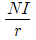
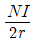
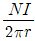
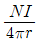

승강기기능사 (2015-04-04 기출문제)
1과목: 승강기개론
1. 카의 문을 열고 닫는 도어머신에서 성능상 요구되는 조건이 아닌 것은?
- 작동이 원활하고 정숙하여야 한다.
- 카 상부에 설치하기 위하여 소형이며 가벼워야 한다.
- 어떠한 경우라도 수동조작에 의하여 카 도어가 열려서는 안된다.
- 작동 회수가 승강기 기동 회수의 2배이므로 보수가 쉬워야 한다.
(정답률: 82%)

2. 다음 중 에스컬레이터의 종류를 수송 능력별로 구분한 형태로 옳은 것은?
- 1200형과 900형
- 1200형과 800형
- 900형과 800형
- 800형과 600형
(정답률: 80%)
3. 승강장 도어가 닫혀 있지 않으면 엘리베이터 운전이 불가능 하도록 하는 것은?
- 승강장 도어스위치
- 승강장 도어행거
- 승강장 도어인터록
- 도어슈
(정답률: 46%)
4. 유압장치의 보수, 점검 또는 수리 등을 할 때에 사용되는 것은?
- 안전밸브
- 유량제어밸브
- 스톱밸브
- 필터
(정답률: 75%)
5. 로프식 엘리베이터에서 도르래의 구조와 특징에 대한 설명으로 틀린 것은?
- 직경은 주로프의 50배 이상으로 하여야 한다.
- 주로프가 벗겨질 우려가 있는 경우에는 로프이탈방지장치를 설치하여야 한다.
- 도르래 홈의 형상에 따라 마찰계수의 크기는 U홈 < 언더커트홈 < V홈의 순이다.
- 마찰계수는 도르래 홈의 형상에 따라 다르다.
(정답률: 74%)
6. 단식자동방식(single automatic)에 관한 설명중 맞는 것은?
- 같은 방향의 호출은 등록된 순서에 따라 응답하면서 운행한다.
- 승강장 버튼은 오름, 내림 공용이다.
- 주로 승객용에 사용된다.
- 1개 호출에 의한 운행중 다른 호출 방향이 같으면 응답한다.
(정답률: 49%)
7. VVVF 제어란?
- 전압을 변환시킨다.
- 주파수를 변환시킨다.
- 전압과 주파수를 변환시킨다.
- 전압과 주파수를 일정하게 유지시킨다.
(정답률: 75%)
8. 승강장의 문이 열린 상태에서 모든 제약이 해제되면 자동적으로 닫히게 하여 문의 개방상태에서 생기는 2차 재해를 방지하는 문의 안전장치는?
- 시그널 컨트롤
- 도어 컨트롤
- 도어 클로저
- 도어 인터록
(정답률: 76%)
9. 카가 어떤 원인으로 최하층을 통과하여 피트에 도달했을 때 카에 충격을 완화시켜 주는 장치는?
- 완충기
- 비상정지장치
- 조속기
- 리미트 스위치
(정답률: 79%)
10. 카 문턱 끝과 승강로 벽과의 간격으로 알맞은 것은?(관련 규정 개정전 문제로 여기서는 기존 정답인 2번을 누르면 정답 처리됩니다. 자세한 내용은 해설을 참고하세요.)
- 11.5cm 이하
- 12.5cm 이하
- 13.5cm 이하
- 14.5cm 이하
(정답률: 79%)
11. 승강로의 벽 일부에 한국산업표준에 알맞은 유리를 사용할 경우 다음 중 적합하지 않은 것은?
- 망유리
- 강화유리
- 접합유리
- 감광유리
(정답률: 63%)
12. 가이드 레일의 역할에 대한 설명 중 틀린 것은?
- 카와 균형추를 승강로 평면 내에서 일정궤도상에 위치를 규제한다.
- 일반적으로 가이드 레일은 H형이 가장 많이 사용된다.
- 카의 자중이나 화물에 의한 카의 기울어짐을 방지한다.
- 비상 멈춤이 작동할 때의 수직하중을 유지한다.
(정답률: 70%)
13. 에스컬레이터에 관한 설명 중 틀린 것은?(오류 신고가 접수된 문제입니다. 반드시 정답과 해설을 확인하시기 바랍니다.)
- 1200형 에스컬레이터의 1시간당 수송인원은 9000명이다.
- 정격속도는 30m/min 이하로 되어 있다.
- 승강 양정(길이)로 고양정은 10m 이상이다.
- 경사도는 수평으로 25도 이내이어야 한다.
(정답률: 73%)
14. 전동 덤웨이터와 구조적으로 가장 유사한 것은?
- 수평보행기
- 엘리베이터
- 에스컬레이터
- 간이 리프트
(정답률: 66%)
15. 유압식 엘리베이터의 특징으로 틀린 것은?
- 기계실을 승강로와 떨어져 설치할 수 있다.
- 플런져에 스톱퍼가 설치되어 있기 때문에 오버헤드가 작다.
- 적재량이 크고 승강행정이 짧은 경우에 유압식이 적당하다.
- 소비전력이 비교적 작다.
(정답률: 59%)
2과목: 안전관리
16. 과부하 감지장치의 용도는?
- 속도 제어용
- 과하중 경보용
- 속도 변환용
- 종점 확인용
(정답률: 74%)
17. 중속 엘리베이터의 속도는 몇 m/min인가?(관련 규정 개정전 문제로 여기서는 기존 정답인 3번을 누르면 정답 처리됩니다. 자세한 내용은 해설을 참고하세요.)
- 20 ~ 45
- 45 ~ 65
- 60 ~ 1⑤
- 100 ~ 230
(정답률: 78%)
18. “승강기의 조속기” 란?
- 카의 속도를 검출하는 장치이다.
- 비상정지장치를 뜻한다.
- 균형추의 속도를 검출한다.
- 플런져를 뜻한다.
(정답률: 81%)
19. 안전사고의 발생요인으로 볼 수 없는 것은?
- 피로감
- 임금
- 감정
- 날씨
(정답률: 85%)
20. 작업의 특수성으로 인해 발생하는 직업병으로서 작업 조건에 의하지 않은 것은?
- 먼지
- 유해 가스
- 소음
- 작업 자세
(정답률: 73%)
21. 승강기 설치보수작업에서 발생되는 위험에 해당되지 않는 것은?
- 물리적 위험
- 접촉적 위험
- 화학적 위험
- 구조적 위험
(정답률: 75%)
22. 안전사고의 통계를 보고 알 수 없는 것은?
- 사고의 경향
- 안전업무의 정도
- 기업이윤
- 안전사고 감소 목표 수준
(정답률: 87%)
23. 승강기 관리주체가 행하여야 할 사항으로 틀린 것은?
- 안전(운행)관리자를 선임하여야 한다.
- 승강기에 관한 전반적인 관리를 하여야 한다.
- 안전(운행)관리자가 선임되면 관리주체는 별다른 관리를 할 필요가 없다.
- 승강기의 유지보수에 대한 위임 용역 및 감독을 하여야 한다.
(정답률: 84%)
24. 인체의 전기저항에 대한 것으로 피부저항은 피부에 땀이 나 있는 경우는 건조시에 비해 피부저항이 어떻게 되는가?
- 2배 증가
- 4배 증가
- 1/12 ~ 1/20 감소
- 1/25 ~ 1/30 감소
(정답률: 54%)
25. 재해 조사의 요령으로 바람직한 방법이 아닌 것은?
- 재해 발생 직후에 행한다.
- 현장의 물리적 증거를 수집한다.
- 재해 피해자로부터 상황을 듣는다.
- 의견 충돌을 피하기 위하여 반드시 1인이 조사하도록 한다.
(정답률: 85%)
26. 전기감전에 의하여 넘어진 사람에 대한 중요관찰사항과 거리가 먼 것은?
- 의식 상태
- 호흡 상태
- 맥박 상태
- 골절 상태
(정답률: 86%)
27. 사업장에서 승강기의 조립 또는 해체작업을 할 때 조치하여야 할 사항과 거리가 먼 것은?
- 작업을 지휘하는 자를 선임하여 지휘자의 책임 하에 작업을 실시할 것
- 작업 할 구역에는 관계근로자외의 자의 출입을 금지시킬 것
- 기상상태의 불안정으로 인하여 날씨가 몹시 나쁠 때에는 그 작업을 중지시킬 것
- 사용자의 편의를 위하여 야간작업을 하도록 할 것
(정답률: 85%)
28. 재해원인의 분류에서 불안정한 상태(물적원인)가 아닌 것은?
- 안전방호장치의 결함
- 작업환경의 결함
- 생산공정의 결함
- 불안전한 자세 결함
(정답률: 59%)
29. 간접식 유압엘리베이터의 특징이 아닌 것은?
- 실린더를 설치하기 위한 보호관이 필요하지 않다.
- 실린더 점검이 용이하다.
- 비상정지장치가 필요하다.
- 로프의 늘어짐과 작동유의 압축성 때문에 부하에 의한 카 바닥의 빠짐이 비교적 적다.
(정답률: 52%)
30. 승강기의 문(Door)에 관한 설명 중 틀린 것은?
- 문 닫힘 도중에도 승강장의 버튼을 동작시키면 다시 열려야 한다.
- 문이 완전히 열린 후 최소 일정 시간 이상 유지되어야 한다.
- 착상구역 이외의 위치에서는 카내의 문개방버튼을 동작시켜도 절대로 개방되지 않아야 한다.
- 문이 일정 시간 후 닫히지 않으면 그 상태를 계속 유지하여야 한다.
(정답률: 76%)
3과목: 승강기보수
31. 로프식 엘리베이터의 카 틀에서 브레이스로드의 분담 하중은 대략 어느 정도 되는가?
- 1/8
- 3/8
- 1/3
- 1/16
(정답률: 57%)
32. 승강장 도어 문턱과 카 문턱과의 수평거리는 몇 mm 이하여야 하는가?
- 125
- 120
- 50
- 35
(정답률: 60%)
33. 에스컬레이터의 디딤판과 스커트 가드와의 틈새는 양쪽 모두 합쳐서 최대 얼마이어야 하는가?
- 5mm 이하
- 7mm 이하
- 9mm 이하
- 10mm 이하
(정답률: 55%)
34. 조속기(GOVERNOR)의 작동상태를 잘못 설명한 것은?
- 카가 하강 과속하는 경우에는 일정 속도를 초과하기 전에 조속기 스위치가 동작해야 한다.
- 조속기의 캣치는 일단 동작하고 난 후 자동으로 복귀되어서는 안 된다.
- 조속기의 스위치는 작동 후 자동 복귀된다.
- 조속기 로프가 장력을 잃게 되면 전동기의 주회로를 차단시키는 경우도 있다.
(정답률: 58%)
35. 다음 중 엘리베이터 감시반에 필요하지 않은 장치는?
- 현재 엘리베이터의 하중 표시장치
- 현재 엘리베이터의 운행방향 표시장치
- 현재 엘리베이터의 위치 표시장치
- 엘리베이터의 이상 유무 확인 표시장치
(정답률: 57%)
36. 조속기의 보수점검 등에 관한 사항과 거리가 먼 것은?
- 층간 정지시, 수동으로 돌려 구출하기 위한 수동핸들의 작동검사 및 보수
- 볼트, 너트, 핀의 이완 유무
- 조속기 시브와 로프 사이의 미끄럼 유무
- 과속스위치 점검 및 작동
(정답률: 42%)
37. 비상용승강기는 화재발생시 화재 진압용으로 사용하기 위하여 고층빌딩에 많이 설치하고 있다. 비상용승강기에 반드시 갖추지 않아도 되는 조건은?
- 비상용 소화기
- 예비전원
- 전용 승강장 이외의 부분과 방화구획
- 비상운전 표시등
(정답률: 63%)
38. 정전 시 램프중심부로부터 2m 떨어진 수직면상의 조도는 몇 lx이상이어야 하는가?(관련 규정 개정전 문제로 여기서는 기존 정답인 4번을 누르면 정답 처리됩니다. 자세한 내용은 해설을 참고하세요.)
- 100
- 50
- 10
- 2
(정답률: 79%)
39. 에스컬레이터 승강장의 주의표지판에 대한 설명 중 옳은 것은?(오류 신고가 접수된 문제입니다. 반드시 정답과 해설을 확인하시기 바랍니다.)
- 주의표지판은 충격을 흡수하는 재질로 만들어야 한다.
- 주의표지판은 영문으로 읽기 쉽게 표기되어야 한다.
- 주의표지판의 크기는 80mm X 80mm 이하의 그림으로 표시되어야 한다.
- 주의표지판의 바탕은 흰색, 도안은 흑색, 사선은 적색이다.
(정답률: 52%)
40. 실린더를 검사하는 것 중 해당하지 않는 것은?
- 패킹으로부터 누유된 기름을 제거하는 장치
- 공기 또는 가스의 배출구
- 더스트 와이퍼의 상태
- 압력배관의 고무호스는 여유가 있는지의 상태
(정답률: 47%)
41. 가이드 레일의 보수 점검 항목이 아닌 것은?
- 브래킷 취부의 앵커 볼트 이완상태
- 레일 및 브래킷의 오염상태
- 레일의 급유상태
- 레일길이의 신축상태
(정답률: 51%)
42. 보수 기술자의 올바른 자세로 볼 수 없는 것은?
- 신속, 정확 및 예의 바르게 보수 처리한다.
- 보수를 할 때는 안전기준보다는 경험을 우선시한다.
- 항상 배우는 자세로 기술향상에 적극노력한다.
- 안전에 유의하면서 작업하고 항상 건강에 유의한다.
(정답률: 85%)
43. 조속기로프의 공칭직경은 몇 mm 이상이어야 하는가?
- 5
- 6
- 7
- 8
(정답률: 60%)
44. 유압잭의 부품이 아닌 것은?
- 사이렌서
- 플런저
- 패킹
- 더스트 와이퍼
(정답률: 49%)
45. 전기식 엘리베이터에서 자체점검주기가 가장 긴 것은?
- 권상기의 감속기어
- 권상기 베어링
- 수동조작핸들
- 고정도르래
(정답률: 52%)
4과목: 기계,전기기초이론
46. 정격속도 60m/min를 초과하는 엘리베이터에 사용되는 비상정지장치의 종류는?
- 점차작동형
- 즉시작동형
- 디스크작동형
- 플라이볼작동형
(정답률: 43%)
47. 운동을 전달하는 장치로 옳은 것은?
- 절이 왕복하는 것을 레버라 한다.
- 절이 요동하는 것을 슬라이더라 한다.
- 절이 회전하는 것을 크랭크라 한다.
- 절이 진동하는 것을 캠이라 한다.
(정답률: 58%)
48. 헬리컬 기어의 설명으로 적절하지 않은 것은?
- 진동과 소음이 크고 운전이 정숙하지 않다.
- 회전시에 축압이 생긴다.
- 스퍼기어보다 가공이 힘들다.
- 이의 물림이 좋고 연속적으로 접촉한다.
(정답률: 59%)
49. 평행판 콘덴서에 있어서 콘덴서의 정전용량은 판 사이의 거리와 어떤 관계인가?
- 반비례
- 비례
- 불변
- 2배
(정답률: 53%)
50. 복활차에서 하중W인 물체를 올리기 위해 필요한 힘(P)은?(단, n은 동활차의 수이다.)
- P=W+2n
- P=W-2n
- P=W×2n
- P=W/2n
(정답률: 46%)
51. 유도 전동기의 동기 속도는 무엇에 의하여 정하여 지는가?
- 전원의 주파수와 전동기의 극수
- 전력과 저항
- 전원의 주파수와 전압
- 전동기의 극수와 전류
(정답률: 49%)
52. 반지름 r(m), 권수 N의 원형 코일에 I(A)의 전류가 흐를 때 원형 코일 중심전의 자기장의 세기(AT/m)는?




(정답률: 49%)
53. 유도전동기에서 슬립이 1이란 전동기의 어느 상태인가?
- 유도 제동기의 역할을 한다.
- 유도 전동기가 전부하 운전 상태이다.
- 유도 전동기가 정지 상태이다.
- 유도 전동기가 동기속도로 회전한다.
(정답률: 70%)
54. 물체에 하중이 작용할 때, 그 재료 내부에 생기는 저항력을 내력이라 하고 단위면적당 내력의 크기를 응력이라 하는데 이 응력을 나타내는 식은?
- 단면적/하중
- 하중/단면적
- 단면적×하중
- 하중-단면적
(정답률: 60%)
55. 유도전동기의 속도제어방법이 아닌 것은?
- 전원 전압을 변화시키는 방법
- 극수를 변화시키는 방법
- 주파수를 변화시키는 방법
- 계자저항을 변화시키는 방법
(정답률: 38%)
56. 다음 중 교류전동기는?
- 분권전동기
- 타여자전동기
- 유도전동기
- 차동복권전동기
(정답률: 45%)
57. 자동제어계의 상태를 교란시키는 외적인 신호는?
- 제어량
- 외란
- 목표량
- 피드백신호
(정답률: 73%)
58. 50㎌의 콘덴서에 200V, 60Hz의 교류 전압을 인가했을 때, 흐르는 전류(A)는?
- 약 2.56
- 약 3.77
- 약 4.56
- 약 5.28
(정답률: 49%)
59. 영(Young)율이 커지면 어떠한 특성을 보이는가?
- 안전하다.
- 위험하다.
- 늘어나기 쉽다.
- 늘어나기 어렵다.
(정답률: 43%)
60. 와이어 로프의 사용 하중이 5000kgf이고, 파괴하중이 25000kgf일 때 안전율은?
- 2.5
- 5.0
- 0.2
- 0.5
(정답률: 66%)